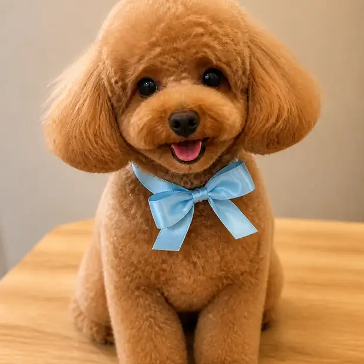
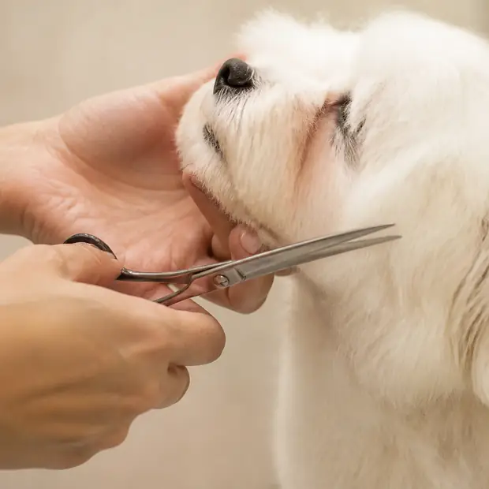
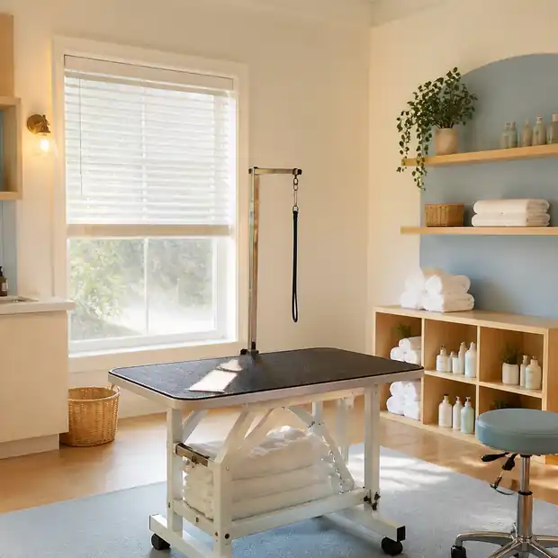
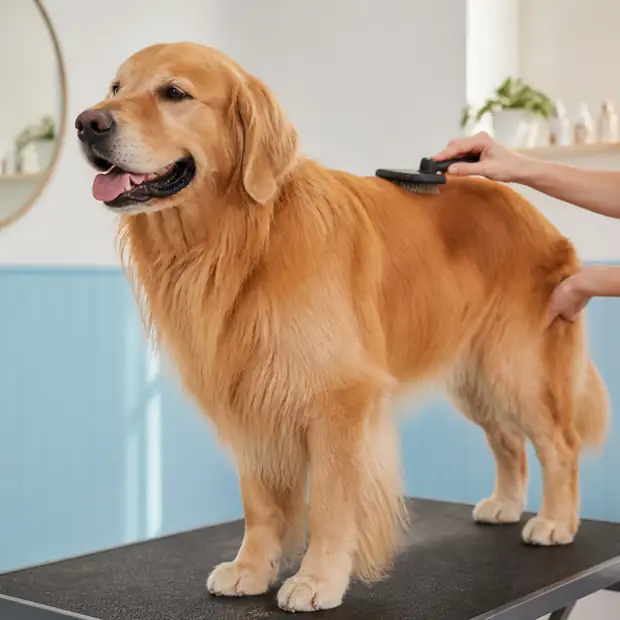
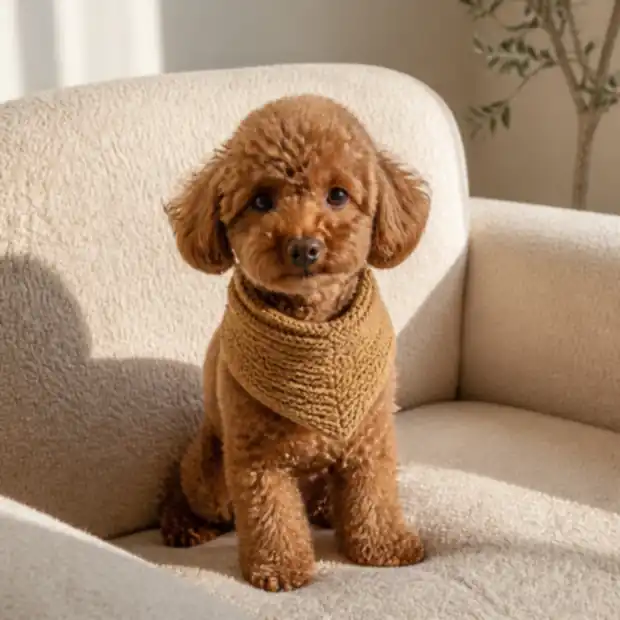
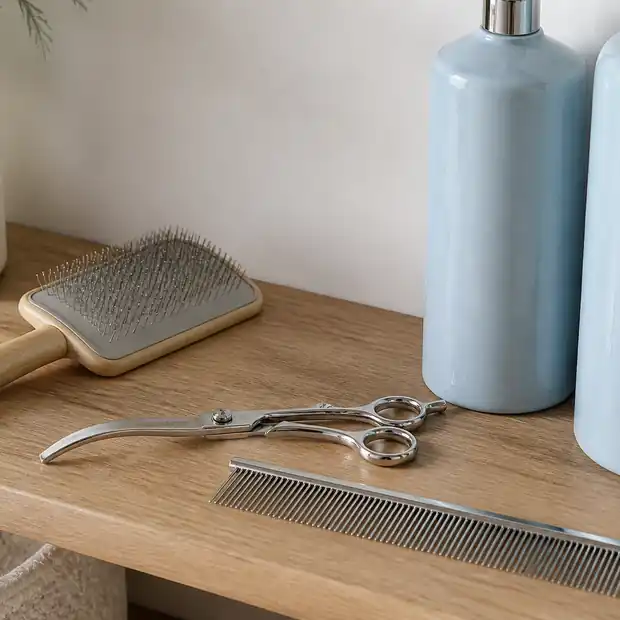
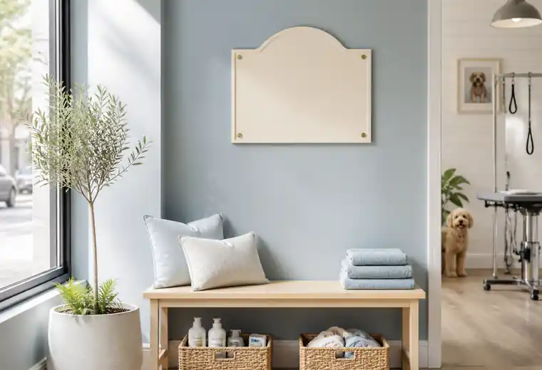

전체 미용
가위컷·클리퍼로 몸 전체를 정리합니다. 비숑·말티푸·푸들 컷 상담 가능.
견종·체중별 상이 · 예약 시 안내YANGJU YULJEONG · DOG GROOMING STUDIO
아이가 긴장하지 않도록, 쉬어가며 자르는 미용.
부부 원장이 함께 케어하는 율정동 애견미용 스튜디오입니다.
매주 화요일 휴무 · 휴무일에는 대형견 미용 가능
01 — GROOMING
견종과 몸무게, 털 상태에 따라 필요한 미용이 다릅니다. 상담할 때 아이 이야기를 먼저 듣고 메뉴를 정합니다.
가위컷·클리퍼로 몸 전체를 정리합니다. 비숑·말티푸·푸들 컷 상담 가능.
견종·체중별 상이 · 예약 시 안내발바닥·항문 주변·귀·발톱. 미용 사이사이 챙기기 좋은 부분 관리.
부분 관리 · 예약 시 안내피부 상태에 맞춰 목욕하고 드라이합니다. 미용 전 기본 코스로 함께 진행합니다.
예약 시 안내늘 맡기던 원장에게 받고 싶으시면 예약할 때 말씀해 주세요.
요청 사항 · 예약 시 안내넓은 공간과 대형 테이블로 진행합니다. 휴무일에도 예약 가능.
견종·체중별 상이 · 문의자주 오시는 아이를 위한 선불권을 운영합니다. 잔액·사용 조건은 매장에서 안내합니다.
매장 문의* 미용 요금은 견종·몸무게·컷 종류에 따라 달라서 이 페이지에는 금액을 적지 않았습니다. DM이나 전화로 아이 정보를 알려주시면 정확한 금액을 안내해 드립니다.
02 — HI, TEDDY CARE
아이 컨디션을 보며 중간중간 쉬어갑니다. 무리하게 잡지 않고, 힘들어하면 잠시 멈춥니다.
두 사람이 함께 잡아 안정감을 주는 방식. 예민한 아이도 덜 놀라게 진행합니다.
CCTV 모니터와 3중 안전문으로 대기·이동 동선을 나눴습니다. 넓은 무료 주차 공간도 있습니다.
미용을 마치면 아이 사진을 보내드립니다. 픽업 전에 모습을 먼저 확인하실 수 있습니다.
“말 못하는 아이를 맡기는 마음이라, 저희도 부모님 마음으로 케어합니다.”
03 — GALLERY
둥글게 다듬은 테디컷, 나란히 앉은 두 마리, 목욕 후 수건에 감싼 모습까지.







* 위 이미지는 분위기 구현용 AI 예시 이미지이며, 실제 제작 시 매장 사진으로 교체됩니다.
04 — BOOKING
미용 중에는 전화를 받기 어렵습니다. 아래 양식을 복사해 인스타 DM으로 보내주시면 확인 후 답장드립니다.
DM 또는 전화
견종·몸무게·희망 컷
날짜·시간 조율
미용 후 사진 전송
인스타 @_hi.teddy_ · 전화 010-9347-9257
05 — VISIT
경기 양주시 율정로 155-15 1층율정동 413-1 · 무료 주차
| 월·수–일 | 09:00 – 19:00 |
|---|---|
| 화요일 | 휴무 (대형견 미용은 가능) |
예약제로 운영하며, 마감 시간은 예약 상황에 따라 달라질 수 있습니다.
010-9347-9257매장 0507-1362-9257 · 미용 중에는 DM 권장